ECSE 307: Linear Systems and Control
McGill University
In this lecture, we
Bode plot: \(|G(jω)|\) and \(\angle G(jω)\) versus \(ω\), as two separate plots.
Nyquist plot: a parametric polar plot of the complex number \(G(jω)\).
We plot it for all \(ω \in (-∞, ∞)\) and draw an arrow in the direction of increasing \(ω\).
For a real impulse response, \(G(-jω) = \overline{G(jω)}\). So the part for \(ω < 0\) is the mirror image about the real axis of the part for \(ω > 0\).
cmul = (a, b) => [a[0] * b[0] - a[1] * b[1], a[0] * b[1] + a[1] * b[0]]
cdiv = (a, b) => {
const d = b[0] * b[0] + b[1] * b[1]
return [(a[0] * b[0] + a[1] * b[1]) / d, (a[1] * b[0] - a[0] * b[1]) / d]
}
// Polynomial with real coefficients (highest power first) evaluated at complex s
polyval = (p, s) => p.reduce((acc, c) => { const t = cmul(acc, s); return [t[0] + c, t[1]] }, [0, 0])
polymul = (...ps) => ps.reduce((a, b) => {
const r = Array(a.length + b.length - 1).fill(0)
a.forEach((x, i) => b.forEach((y, j) => { r[i + j] += x * y }))
return r
})
tfval = (G, s) => cdiv(polyval(G.num, s), polyval(G.den, s))
// ---- Frequency response on a log grid, plus its mirror image ----
nyquistData = (G, {wmin = 1e-4, wmax = 1e3, n = 3000} = {}) => {
const pos = Array.from({length: n}, (_, i) => {
const w = wmin * Math.pow(wmax / wmin, i / (n - 1))
const z = tfval(G, [0, w])
return {w, re: z[0], im: z[1]}
})
const neg = pos.map(d => ({w: -d.w, re: d.re, im: -d.im})).reverse()
return {pos, neg}
}
// Direction markers: a triangle at G(jω), rotated along dG/dω
arrowAt = (G, w) => {
const h = 1e-5 * Math.max(1, Math.abs(w))
const z = tfval(G, [0, w])
const a = tfval(G, [0, w + h]), b = tfval(G, [0, w - h])
const theta = Math.atan2(a[1] - b[1], a[0] - b[0]) * 180 / Math.PI
return {re: z[0], im: z[1], rot: 90 - theta}
}
nyquistBlue = "#0d6efd"
criticalRed = "#dc3545"
nyquistPlot = (G, opts = {}) => {
const {pos, neg} = nyquistData(G, opts)
const ws = opts.arrows ?? []
const arrows = ws.flatMap(w => [arrowAt(G, w), arrowAt(G, -w)])
return Plot.plot({
width: opts.width ?? 480,
aspectRatio: 1,
x: {domain: opts.x, label: "Re", labelAnchor: "right", ticks: opts.xticks ?? 5},
y: {domain: opts.y, label: "Im", labelAnchor: "top", ticks: opts.yticks ?? 5},
clip: true,
grid: true,
style: {fontSize: "14px", background: "transparent"},
marks: [
Plot.ruleX([0], {stroke: "#adb5bd"}),
Plot.ruleY([0], {stroke: "#adb5bd"}),
...(opts.under ?? []),
Plot.line(neg, {x: "re", y: "im", stroke: nyquistBlue, strokeWidth: 2,
strokeDasharray: "6,4", strokeOpacity: 0.7}),
Plot.line(pos, {x: "re", y: "im", stroke: nyquistBlue, strokeWidth: 2.5,
channels: {"ω": "w"},
tip: {format: {x: ".3f", y: ".3f", "ω": ".3g"}}}),
Plot.dot(arrows, {x: "re", y: "im", rotate: "rot", symbol: "triangle",
fill: nyquistBlue, r: 6}),
// Critical point -1 + j0 as a red "+", shown only when asked for (as in the notes)
...(opts.critical ?
[Plot.dot([{re: -1, im: 0}], {x: "re", y: "im", symbol: "plus",
stroke: criticalRed, strokeWidth: 3, r: 7})] : []),
...(opts.extra ?? [])
]
})
}\[ G(s) = K \frac{a}{s + a} \]
From the Bode plot:
| \(\lvert G(jω) \rvert\) | \(\angle G(jω)\) | |
|---|---|---|
| \(ω \to 0\) | \(K\) | \(0^∘\) |
| \(ω \to ∞\) | \(0\) | \(-90^∘\) |
\[ G(s) = \frac{K}{s} ⋅ \frac{a}{s + a} \]
| \(\lvert G(jω) \rvert\) | \(\angle G(jω)\) | |
|---|---|---|
| \(ω \to 0\) | \(∞\) | \(-90^∘\) |
| \(ω \to ∞\) | \(0\) | \(-180^∘\) |
\(G(s) = \dfrac{5 ⋅ 2 ⋅ 3}{s(s + 2)(s + 3)}\)
Dropping the argument \((s)\), the closed-loop transfer function is \[ T = \frac{G}{1 + GH}. \]
\(T\) is stable \(\iff\) \(T\) has no poles in the ORHP \(\iff\) \(1 + GH\) has no zeros in the ORHP.
We can determine the stability of \(T\) if we know the number of zeros of \(1 + GH\) in the ORHP.
Write \(G = N_G / D_G\) and \(H = N_H / D_H\).
Then \[ GH = \frac{N_G N_H}{D_G D_H} \quad\text{and}\quad 1 + GH = \frac{D_G D_H + N_G N_H}{D_G D_H}. \]
So \(1 + GH\) and \(GH\) have the same poles, and in particular the same number of poles in the ORHP.
Question: If we know the number of poles of \(1 + GH\) in the ORHP, can we find the number of zeros of \(1 + GH\) in the ORHP?
The answer is yes, via Cauchy’s argument principle.
The transfer function \(G(s) = \dfrac{s + 1}{s + 2}\) maps each point of the \(s\)-plane to a point of the \(G\)-plane. For example, \(G(-1 + j) = \dfrac{j}{1 + j} = \dfrac{1 + j}{2}\).
mapG = ({num: [1, 1], den: [1, 2]})
sPoint = [sigma, omega]
GPoint = {
const d = polyval(mapG.den, sPoint)
return Math.hypot(d[0], d[1]) < 1e-9 ? null : tfval(mapG, sPoint)
}
fmtC = z => `${z[0].toFixed(2)} ${z[1] < 0 ? "−" : "+"} j${Math.abs(z[1]).toFixed(2)}`
html`<div class="ojs-readout">s = ${fmtC(sPoint)}<br>G(s) = ${GPoint ? fmtC(GPoint) : "∞ (pole)"}</div>`\(s\)-plane: zero (\(○\)) at \(-1\), pole (\(×\)) at \(-2\)
\(G\)-plane
planePlot = (marks, xd, yd) => Plot.plot({
width: 400, aspectRatio: 1, grid: true, clip: true,
x: {domain: xd, label: null}, y: {domain: yd, label: null},
style: {fontSize: "13px", background: "transparent"},
marks: [Plot.ruleX([0], {stroke: "#adb5bd"}), Plot.ruleY([0], {stroke: "#adb5bd"}), ...marks]
})Away from its poles, \(G\) is continuous. So a curve in the \(s\)-plane that does not pass through a pole of \(G\) is mapped to a curve in the \(G\)-plane.
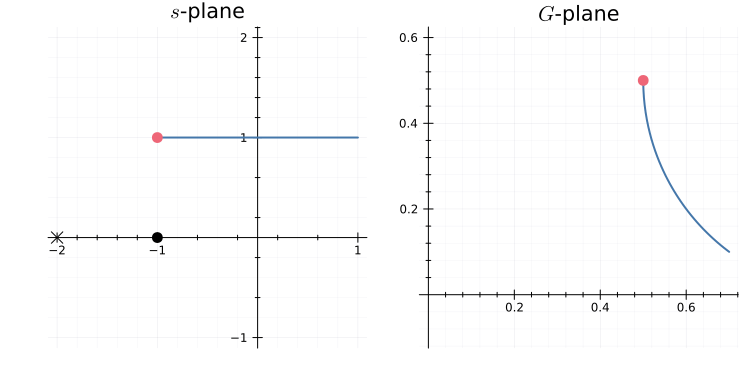
\(G(s) = \dfrac{s + 1}{s + 2}\); the zero (\(○\)) is at \(-1\) and the pole (\(×\)) is at \(-2\).
A curve that starts and ends at the same point is called a contour. By convention, contours in the \(s\)-plane are traversed clockwise.
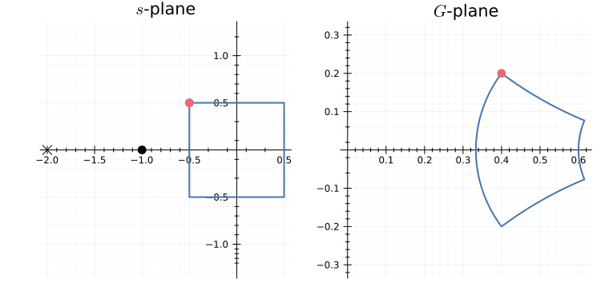
The contour encloses no poles or zeros. Its image is also clockwise and does not encircle the origin.
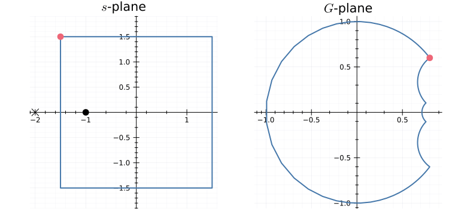
How many times does the image encircle the origin, and in which direction?
One clockwise encirclement of the origin.
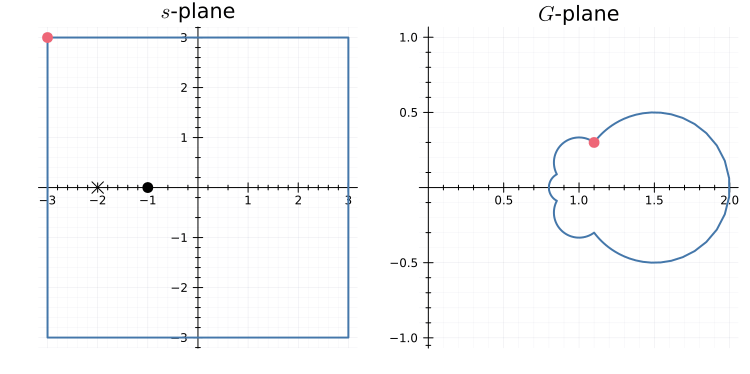
How many times does the image encircle the origin, and in which direction?
No encirclement of the origin.
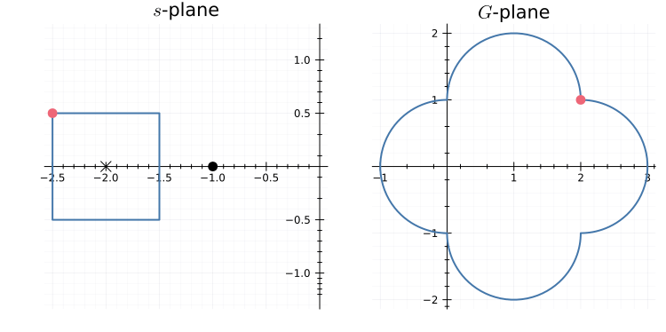
How many times does the image encircle the origin, and in which direction?
One counter-clockwise encirclement of the origin.
Cauchy’s argument principle
\[ N = Z - P \]
| Contour encloses | \(N\) | \(Z\) | \(P\) |
|---|---|---|---|
| nothing | \(0\) | \(0\) | \(0\) |
| the zero at \(-1\) | \(1\) | \(1\) | \(0\) |
| the zero at \(-1\) and the pole at \(-2\) | \(0\) | \(1\) | \(1\) |
| the pole at \(-2\) | \(-1\) | \(0\) | \(1\) |
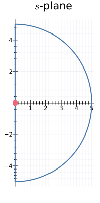
As \(R \to ∞\), this contour encloses the entire ORHP.
The image of the \(jω\)-axis is \(G(jω)\) for \(ω \in (-∞, ∞)\), which is precisely the Nyquist plot of \(G\). For a proper \(G\), the image of the large semicircle collapses to the single point \(\lim_{s \to ∞} G(s)\).
Take \(G(s) = \dfrac{1}{s + 2}\) and \(H(s) = 1\), and map the Nyquist contour through \(1 + GH\).
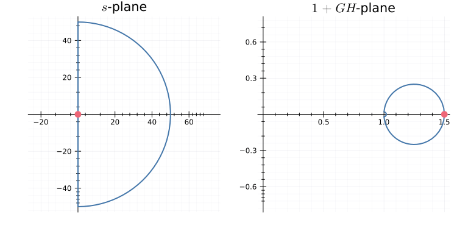
The small “kink” near \(1 + j0\) is the image of the semicircle of radius \(R\). It collapses to a point as \(R \to ∞\).
With the Nyquist contour and the function \(1 + GH\), Cauchy’s argument principle gives \[ \bbox[5pt,border: 1px solid] {\begin{array}{@{}c@{}} \text{Zeros of $1 + GH$} \\ \text{in ORHP} \end{array}} = \bbox[5pt,border: 1px solid] {\begin{array}{c} \text{Number of clockwise} \\ \text{encirclements of origin}\\ \text{in NP of $1 + GH$} \end{array}} + \bbox[5pt,border: 1px solid] {\begin{array}{c} \text{Number of poles} \\ \text{of $1+GH$}\\ \text{in the ORHP} \end{array}} \]
If we know the number of poles of \(1 + GH\) in the ORHP, this answers our original question.
The only catch is that we need to draw the Nyquist plot of \(1 + GH\) rather than that of \(GH\).
The Nyquist plot of \(1 + GH\) is the Nyquist plot of \(GH\) shifted by \(1\). Therefore, \[ \bbox[5pt,border: 1px solid] {\begin{array}{@{}c@{}} \text{Number of clockwise encirclements}\\ \text{of \textbf{origin} in the} \\ \text{Nyquist plot of $1 + GH$} \end{array}} = \bbox[5pt,border: 1px solid] {\begin{array}{@{}c@{}} \text{Number of clockwise encirclements}\\ \text{of $\boldsymbol{-1 + j0}$ in the} \\ \text{Nyquist plot of $GH$} \end{array}} \]
Moreover, we have already shown that \[ \bbox[5pt,border: 1px solid] {\begin{array}{@{}c@{}} \text{Zeros of $1 + GH$} \\ \text{in ORHP} \end{array}} = \bbox[5pt,border: 1px solid] {\begin{array}{@{}c@{}} \text{Number of poles} \\ \text{of $T$ in ORHP} \end{array}} \quad\text{and}\quad \bbox[5pt,border: 1px solid] {\begin{array}{c} \text{Number of poles} \\ \text{of $1+GH$}\\ \text{in the ORHP} \end{array}} = \bbox[5pt,border: 1px solid] {\begin{array}{@{}c@{}} \text{Number of poles}\\ \text{of $GH$ in ORHP} \end{array}} \]
Nyquist formula
\[ Z = N + P \]
Procedure
\[ GH(s) = \frac{K}{(s - 2)(s + 6)(s + 8)} \]
We look at the Nyquist plot for \(K = 50\), \(100\), \(336\), and \(500\).
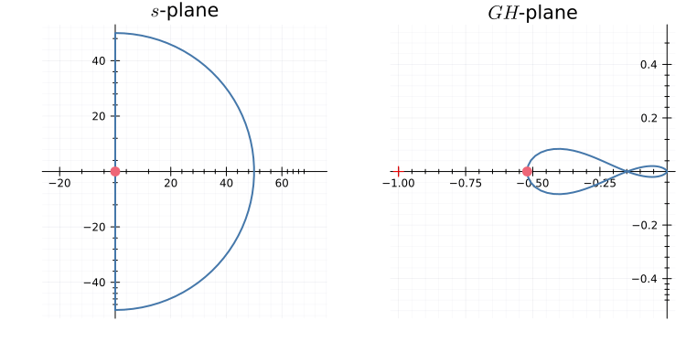
No encirclement of \(-1\), so \(N = 0\) and \(Z = N + P = 1\). Unstable.
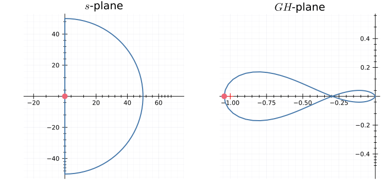
One counter-clockwise encirclement of \(-1\), so \(N = -1\) and \(Z = N + P = 0\). Stable.
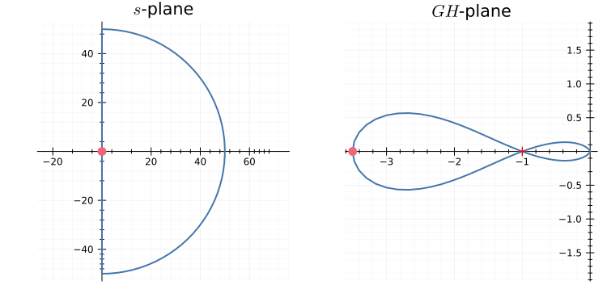
The plot passes through \(-1\), so \(1 + GH\) has zeros on the \(jω\)-axis (at \(±j\sqrt{20}\)). Marginally stable.
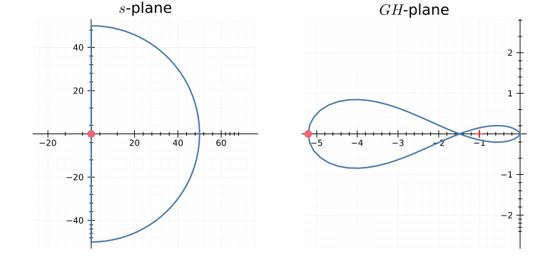
One clockwise encirclement of \(-1\), so \(N = 1\) and \(Z = N + P = 2\). Unstable.
Routh-Hurwitz on \(s^3 + 12 s^2 + 20 s + (K - 96)\) confirms that the closed loop is stable exactly when \(96 < K < 336\).
\[ GH(s) = K \frac{(s + 1)(s + 2)}{(s - 3)(s - 4)} \]
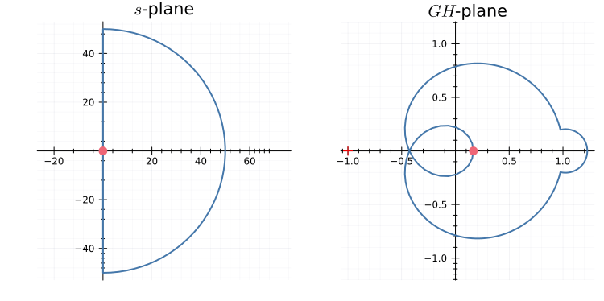
The kink near \(1 + j0\) in the \(GH\)-plane becomes a point as \(R \to ∞\) in the \(s\)-plane.
No encirclement of \(-1\), so \(N = 0\) and \(Z = N + P = 2\). Unstable.
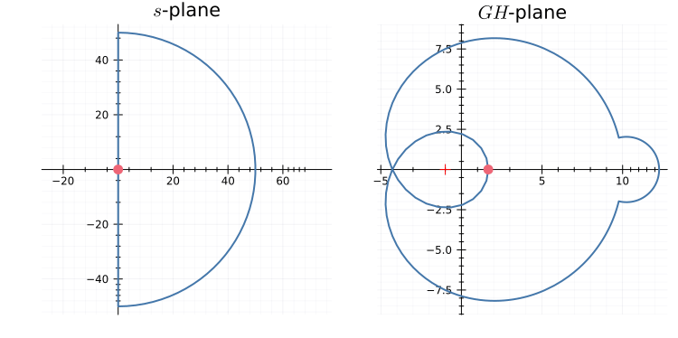
Two counter-clockwise encirclements of \(-1\), so \(N = -2\) and \(Z = N + P = 0\). Stable.
Routh-Hurwitz on \((1 + K) s^2 + (3K - 7) s + (12 + 2K)\) confirms that the closed loop is stable exactly when \(K > 7/3\).
Write \(GH(s) = K\, L(s)\). The Nyquist plot of \(GH\) is that of \(L\) scaled by \(K\), and \[ K L(jω) = -1 \iff L(jω) = -\frac{1}{K}. \]
Hence \[ \begin{pmatrix} \text{CW encirclements of } -1 \\ \text{by the Nyquist plot of } K L \end{pmatrix} = \begin{pmatrix} \text{CW encirclements of } -1/K \\ \text{by the Nyquist plot of } L \end{pmatrix}. \] This also holds for \(K < 0\), because a \(180^∘\) rotation preserves orientation.
Draw the Nyquist plot once (for \(K = 1\)) and count the encirclements of \(-1/K\).
\[ GH(s) = \frac{K}{(s + 1)(s + 2)} \]
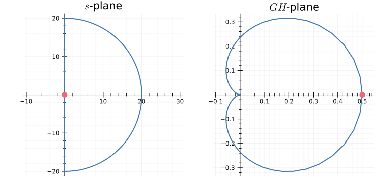
Nyquist plot for \(K = 1\). It meets the real axis at \(0\) and \(1/2\).
\(P = 0\), so stability needs \(N = 0\).
| Location of \(-1/K\) | \(K\) | \(N\) | Stable? |
|---|---|---|---|
| \((-∞, 0)\) | \((0, ∞)\) | \(0\) | Yes |
| \(\left(0, \tfrac 12\right)\) | \((-∞, -2)\) | \(1\) | No |
| \(\left(\tfrac 12, ∞\right)\) | \((-2, 0)\) | \(0\) | Yes |
Stable for \(K > 0\) or \(K \in (-2, 0)\).
\[ GH(s) = \frac{K}{(s + 1)(s + 2)} \]
closedNyquistCurve = L => {
// Closed polyline of L(jω), ω from −∞ to ∞; the large semicircle maps to 0
const {pos, neg} = nyquistData(L, {wmin: 1e-4, wmax: 1e4, n: 6000})
const z0 = tfval(L, [0, 0])
return [...neg, {re: z0[0], im: z0[1]}, ...pos].map(d => [d.re, d.im])
}
gainExamples = {
const ex = {
ex3: {L: {num: [1], den: polymul([1, 1], [1, 2])}, P: 0,
x: [-0.3, 0.7], y: [-0.45, 0.45], arrows: [0.7, 3], c0: -0.2},
ex4: {L: {num: [6], den: polymul([1, 1], [1, 2], [1, 3])}, P: 0,
x: [-0.5, 1.2], y: [-0.85, 0.85], arrows: [0.8, 2], c0: -0.2},
ex5: {L: {num: [1, -1], den: [1, 1, -1, 2]}, P: 2,
x: [-0.85, 0.25], y: [-0.4, 0.4], arrows: [0.3, 1.5], c0: -0.6}
}
for (const e of Object.values(ex)) e.curve = closedNyquistCurve(e.L)
return ex
}
gainSlider = ex => Inputs.range(ex.x, {step: 0.005, value: ex.c0, label: "−1/K", format: x => x.toFixed(3)})
gainPlot = (ex, c) => nyquistPlot(ex.L, {
x: ex.x, y: ex.y, width: 500, arrows: ex.arrows,
extra: [Plot.dot([{re: c, im: 0}], {x: "re", y: "im", symbol: "plus",
stroke: criticalRed, strokeWidth: 3, r: 8})]
})
gainReadout = (ex, c) => {
const K = Math.abs(c) < 1e-9 ? null : -1 / c
let verdict
if (K === null) {
verdict = "−1/K = 0 corresponds to K → ±∞."
} else if (distToCurve(ex.curve, [c, 0]) < 2e-4 * (ex.x[1] - ex.x[0])) {
verdict = "−1/K lies on the plot, so the closed loop has poles on the jω-axis."
} else {
const N = cwEncirclements(ex.curve, [c, 0])
const Z = N + ex.P
verdict = `N = ${N}, so Z = N + P = ${Z}: ${Z === 0 ? "stable" : "unstable"}.`
}
return html`<div class="ojs-readout">
<div>P = ${ex.P}, K = ${K === null ? "±∞" : K.toFixed(2)}</div>
<div>${verdict}</div>
</div>`
}
// Clockwise winding number of a closed polyline about the point p
cwEncirclements = (pts, p) => {
let total = 0
for (let i = 0; i < pts.length; i++) {
const a = pts[i], b = pts[(i + 1) % pts.length]
let d = Math.atan2(b[1] - p[1], b[0] - p[0]) - Math.atan2(a[1] - p[1], a[0] - p[0])
if (d > Math.PI) d -= 2 * Math.PI
if (d < -Math.PI) d += 2 * Math.PI
total += d
}
return -Math.round(total / (2 * Math.PI))
}
distToCurve = (pts, p) => {
let best = Infinity
for (let i = 0; i + 1 < pts.length; i++) {
const a = pts[i], b = pts[i + 1]
const vx = b[0] - a[0], vy = b[1] - a[1]
const L2 = vx * vx + vy * vy
const t = L2 === 0 ? 0 : Math.max(0, Math.min(1, ((p[0] - a[0]) * vx + (p[1] - a[1]) * vy) / L2))
best = Math.min(best, Math.hypot(p[0] - a[0] - t * vx, p[1] - a[1] - t * vy))
}
return best
}\[ GH(s) = \frac{6K}{(s + 1)(s + 2)(s + 3)} \]
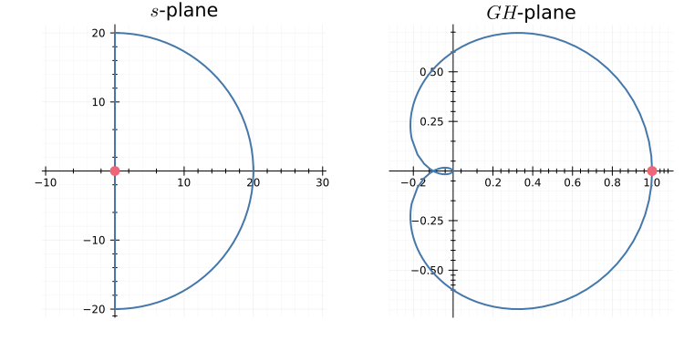
Nyquist plot for \(K = 1\). It meets the real axis at \(-0.1\), \(0\), and \(1\).
\(P = 0\), so stability needs \(N = 0\).
| Location of \(-1/K\) | \(K\) | \(N\) | Stable? |
|---|---|---|---|
| \(\left(-∞, -\tfrac{1}{10}\right)\) | \((0, 10)\) | \(0\) | Yes |
| \(\left(-\tfrac{1}{10}, 0\right)\) | \((10, ∞)\) | \(2\) | No |
| \((0, 1)\) | \((-∞, -1)\) | \(1\) | No |
| \((1, ∞)\) | \((-1, 0)\) | \(0\) | Yes |
Stable for \(K \in (0, 10)\) or \(K \in (-1, 0)\).
\[ GH(s) = \frac{K(s - 1)}{(s + 2)(s^2 - s + 1)} \]
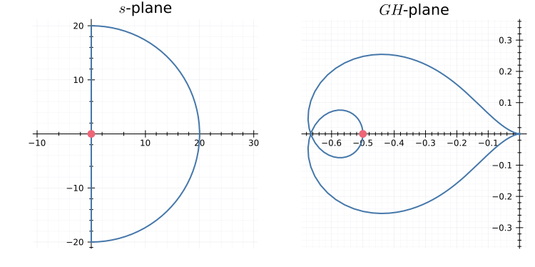
Nyquist plot for \(K = 1\). It meets the real axis at \(-2/3\), \(-1/2\), and \(0\).
The roots of \(s^2 - s + 1\) are \((1 ± j\sqrt 3)/2\), so \(P = 2\) and stability needs \(N = -2\).
| Location of \(-1/K\) | \(K\) | \(N\) | Stable? |
|---|---|---|---|
| \(\left(-∞, -\tfrac 23\right)\) | \((0, 1.5)\) | \(0\) | No |
| \(\left(-\tfrac 23, -\tfrac 12\right)\) | \((1.5, 2)\) | \(-2\) | Yes |
| \(\left(-\tfrac 12, 0\right)\) | \((2, ∞)\) | \(-1\) | No |
| \((0, ∞)\) | \((-∞, 0)\) | \(0\) | No |
Stable only for \(K \in (1.5, 2)\).
Cauchy’s argument principle requires that the contour not pass through a pole. This fails when \(GH\) has a pole on the \(jω\)-axis, e.g., \[ GH(s) = \frac{1}{s(s + 1)}. \]
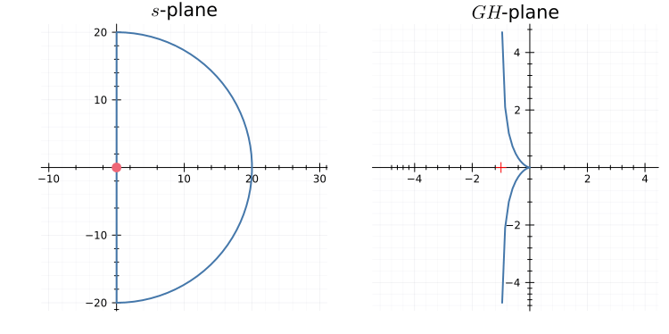
Here \(P = 0\), so stability needs \(N = 0\). But the plot is not closed, so we cannot count encirclements of \(-1\).
Skip the pole at the origin along a small semicircle \(s = r e^{jθ}\), \(θ \in [-90^∘, 90^∘]\), and let \(r \to 0\).
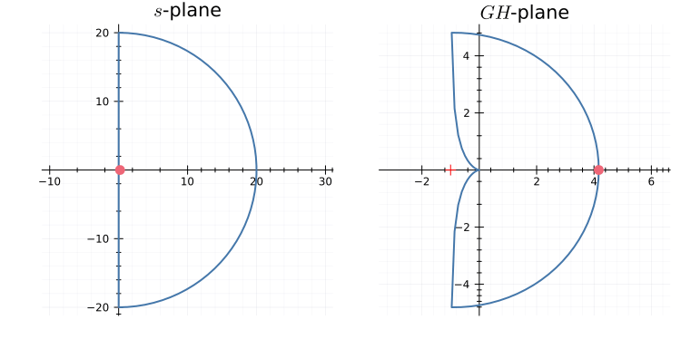
The indentation has radius \(r = 0.2\), which is not visible at this scale.
Standard software does not draw this part of the plot. We need to close the plot by hand.
On the small semicircle \(s = r e^{jθ}\), we have \(GH(r e^{jθ}) = \dfrac{1}{r e^{jθ}(1 + r e^{jθ})} ≈ \dfrac{1}{r} e^{-jθ}\).
| \(θ\) | \(-90^∘\) | \(-45^∘\) | \(0^∘\) | \(45^∘\) | \(90^∘\) |
|---|---|---|---|---|---|
| \(\lvert GH(re^{jθ}) \rvert\) | \(1/r\) | \(1/r\) | \(1/r\) | \(1/r\) | \(1/r\) |
| \(\angle GH(re^{jθ})\) | \(90^∘\) | \(45^∘\) | \(0^∘\) | \(-45^∘\) | \(-90^∘\) |
Left: \(s\)-plane near the pole. Right: \(GH\)-plane for \(r = 0.25\). Orange: the small semicircle and its image; labels give \(θ\).
indentOrange = "#e8710a"
// Two panels: the indentation s = r e^{jθ} around a pole at the origin, and its image under G.
// A red dot (as in the notes' animations) sweeps the small semicircle from θ = −90° to 90°,
// pauses, and repeats; its image moves along the arc in the GH-plane. The plots are drawn
// once and only the dots and the θ label are moved, by a timer cleared on invalidation.
indentationDiagram = (G, r, invalidation) => {
const deg = Math.PI / 180
const thetas = [-90, -45, 0, 45, 90]
const lbl = t => `${t < 0 ? "−" : ""}${Math.abs(t)}°`
const sOf = t => [r * Math.cos(t * deg), r * Math.sin(t * deg)]
const tri = (z, dz) => ({re: z[0], im: z[1], rot: 90 - Math.atan2(dz[1], dz[0]) / deg})
const axes = [Plot.ruleX([0], {stroke: "#adb5bd"}), Plot.ruleY([0], {stroke: "#adb5bd"})]
const style = {fontSize: "12px", background: "transparent"}
// The moving dot is the only mark filled with this red; Quarto's Plot (0.6.11) has no className option
const movingRed = "#ee6677"
const movingDot = z => [Plot.dot([z], {fill: movingRed, stroke: "white", strokeWidth: 1.5, r: 7})]
// s-plane: jω-axis pieces of the contour (blue) and the indentation (orange)
const A = 0.4
const sArc = d3.range(-90, 90.5, 1).map(t => { const z = sOf(t); return {re: z[0], im: z[1]} })
const sPlot = Plot.plot({
width: 250, aspectRatio: 1, x: {domain: [-A, A], label: null, ticks: 0},
y: {domain: [-A, A], label: null, ticks: 0}, style,
marks: [
...axes,
Plot.line([[0, -A], [0, -r]], {stroke: nyquistBlue, strokeWidth: 2.5}),
Plot.line([[0, r], [0, A]], {stroke: nyquistBlue, strokeWidth: 2.5}),
Plot.dot([[0, -(A + 2 * r) / 3], [0, (A + 2 * r) / 3]], {symbol: "triangle", fill: nyquistBlue, r: 6}),
Plot.line(sArc, {x: "re", y: "im", stroke: indentOrange, strokeWidth: 2.5}),
Plot.dot([-67.5, 67.5].map(t => tri(sOf(t), [-Math.sin(t * deg), Math.cos(t * deg)])),
{x: "re", y: "im", rotate: "rot", symbol: "triangle", fill: indentOrange, r: 6}),
Plot.dot([[0, 0]], {symbol: "times", stroke: "black", strokeWidth: 2, r: 6}),
Plot.dot(thetas.map(sOf), {fill: indentOrange, r: 4}),
Plot.text(thetas.map(t => ({z: sOf(t), t})), {
x: d => Math.abs(d.t) === 90 ? -0.09 : d.z[0] * 1.45,
y: d => Math.abs(d.t) === 90 ? d.z[1] : d.z[1] * 1.45, text: d => lbl(d.t), fill: "#495057"}),
Plot.text([[A, -A]], {text: ["s-plane"], textAnchor: "end", dx: -4, dy: -8, fill: "#6c757d"}),
...movingDot(sOf(-90)),
Plot.text([[-A, A]], {text: [`θ = ${lbl(-90)}`], textAnchor: "start", dx: 4, dy: 10,
fontSize: 14, fill: "#212529"})
]
})
// GH-plane: the software Nyquist plot (blue) and the image of the indentation (orange)
const {pos, neg} = nyquistData(G, {wmin: r, wmax: 1e3, n: 1500})
const gArc = d3.range(-90, 90.5, 1).map(t => { const z = tfval(G, sOf(t)); return {re: z[0], im: z[1]} })
const gOf = t => tfval(G, sOf(t))
const gTan = t => { const a = gOf(t + 0.01), b = gOf(t - 0.01); return [a[0] - b[0], a[1] - b[1]] }
const gPlot = Plot.plot({
width: 280, aspectRatio: 1, x: {domain: [-1.8, 4.2], label: null, ticks: 4},
y: {domain: [-4.6, 4.6], label: null, ticks: 5}, style,
marks: [
...axes,
Plot.line(neg, {x: "re", y: "im", stroke: nyquistBlue, strokeWidth: 2, strokeDasharray: "6,4", strokeOpacity: 0.7}),
Plot.line(pos, {x: "re", y: "im", stroke: nyquistBlue, strokeWidth: 2.5}),
Plot.dot([arrowAt(G, 0.6), arrowAt(G, -0.6)], {x: "re", y: "im", rotate: "rot", symbol: "triangle", fill: nyquistBlue, r: 6}),
Plot.line(gArc, {x: "re", y: "im", stroke: indentOrange, strokeWidth: 2.5}),
Plot.dot([-67.5, 67.5].map(t => tri(gOf(t), gTan(t))),
{x: "re", y: "im", rotate: "rot", symbol: "triangle", fill: indentOrange, r: 6}),
Plot.dot(thetas.map(gOf), {fill: indentOrange, r: 4}),
Plot.text(thetas.map(t => ({z: gOf(t), t})), {
x: d => d.z[0] + 0.55 * d.z[0] / Math.hypot(...d.z), y: d => d.z[1] + 0.55 * d.z[1] / Math.hypot(...d.z),
text: d => lbl(d.t), fill: "#495057"}),
Plot.dot([[-1, 0]], {symbol: "plus", stroke: criticalRed, strokeWidth: 3, r: 7}),
Plot.text([[4.2, -4.6]], {text: ["GH-plane"], textAnchor: "end", dx: -4, dy: -8, fill: "#6c757d"}),
...movingDot(gOf(-90))
]
})
const sDot = sPlot.querySelector(`g[fill="${movingRed}"] circle`)
const gDot = gPlot.querySelector(`g[fill="${movingRed}"] circle`)
const label = [...sPlot.querySelectorAll("text")].find(t => t.textContent.startsWith("θ ="))
if (sDot && gDot) {
const place = (dot, plot, z) => {
dot.setAttribute("cx", plot.scale("x").apply(z[0]))
dot.setAttribute("cy", plot.scale("y").apply(z[1]))
}
const frames = [...Array(10).fill(-90), ...d3.range(-90, 90.5, 2), ...Array(20).fill(90)]
let i = 0
const timer = setInterval(() => {
const t = frames[i]
i = (i + 1) % frames.length
place(sDot, sPlot, sOf(t))
place(gDot, gPlot, gOf(t))
if (label) label.textContent = `θ = ${lbl(t)}`
}, 50)
if (invalidation) invalidation.then(() => clearInterval(timer))
}
return html`<div style="display: flex; gap: 16px; justify-content: center; align-items: center">${sPlot}${gPlot}</div>`
}\[ GH(s) = \frac{K}{s(s + 1)(2s + 1)} \]
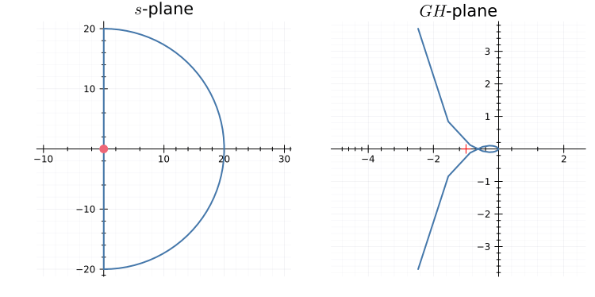
Nyquist plot for \(K = 1\). It meets the real axis at \(0\) and \(-2/3\).
Find the values of \(K\) for which the closed loop is stable.
On \(s = r e^{jθ}\), \[ GH(r e^{jθ}) = \frac{K}{r e^{jθ}(r e^{jθ} + 1)(2 r e^{jθ} + 1)} ≈ \frac{K}{r} e^{-jθ}. \]
| \(θ\) | \(\lvert GH \rvert\) | \(\angle GH\) |
|---|---|---|
| \(-90^∘\) | \(K/r\) | \(90^∘\) |
| \(-45^∘\) | \(K/r\) | \(45^∘\) |
| \(0^∘\) | \(K/r\) | \(0^∘\) |
| \(45^∘\) | \(K/r\) | \(-45^∘\) |
| \(90^∘\) | \(K/r\) | \(-90^∘\) |
The two arms are joined by a clockwise semicircle at infinity.
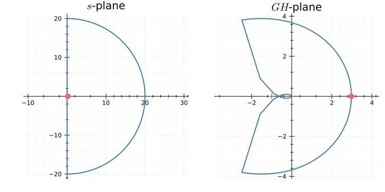
\[ GH(s) = \frac{K}{s(s + 1)(2s + 1)} \]
Closed Nyquist plot for \(K = 1\). It meets the real axis at \(0\) and \(-2/3\).
\(P = 0\), so stability needs \(N = 0\).
| Location of \(-1/K\) | \(K\) | \(N\) | Stable? |
|---|---|---|---|
| \(\left(-∞, -\tfrac 23\right)\) | \((0, 1.5)\) | \(0\) | Yes |
| \(\left(-\tfrac 23, 0\right)\) | \((1.5, ∞)\) | \(2\) | No |
| \((0, ∞)\) | \((-∞, 0)\) | \(1\) | No |
The closed loop is stable for \(K \in (0, 1.5)\).
Cross-check with Routh-Hurwitz: \(2 s^3 + 3 s^2 + s + K\) is stable if and only if \(0 < K < 3/2\).
\[ GH(s) = \frac{K}{s^2 (s + 1)} \]
On \(s = r e^{jθ}\), \[ GH(r e^{jθ}) ≈ \frac{K}{r^2} e^{-j 2θ}. \]
| \(θ\) | \(-90^∘\) | \(-45^∘\) | \(0^∘\) | \(45^∘\) | \(90^∘\) |
|---|---|---|---|---|---|
| \(\angle GH\) | \(180^∘\) | \(90^∘\) | \(0^∘\) | \(-90^∘\) | \(-180^∘\) |
The magnitude is \(K/r^2 \to ∞\), so the arms are joined by a full clockwise circle at infinity.
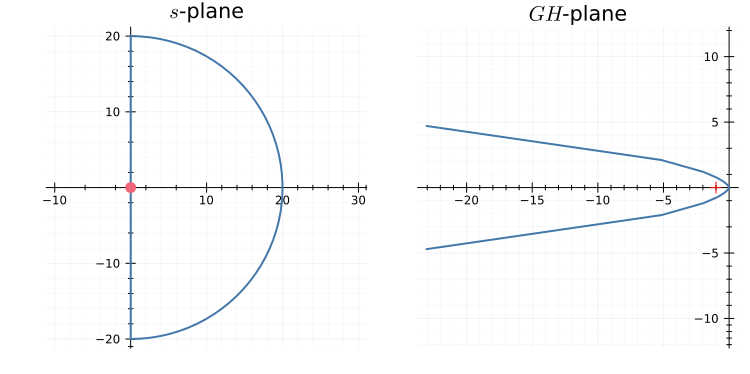
Nyquist plot for \(K = 1\), as drawn by software.
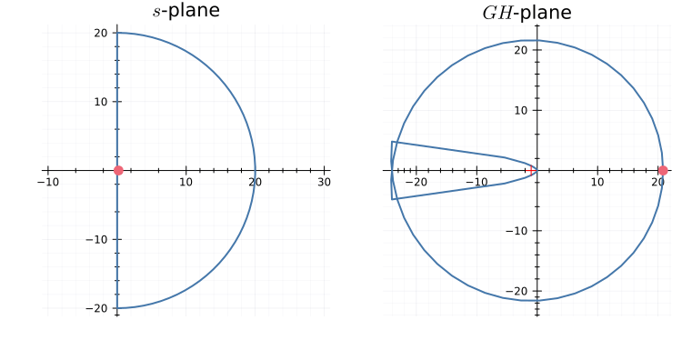
For every \(K > 0\), \(N = 2\). Since \(P = 0\), \(Z = N + P = 2\). The closed loop is unstable for every \(K > 0\).
Cross-check: the characteristic polynomial \(s^3 + s^2 + K\) has no \(s\) term, so it is not stable for any \(K\).
Consider \[ GH(s) = \frac{1}{(s^2 + 1)(s + 1)}, \] which has poles at \(±j\).